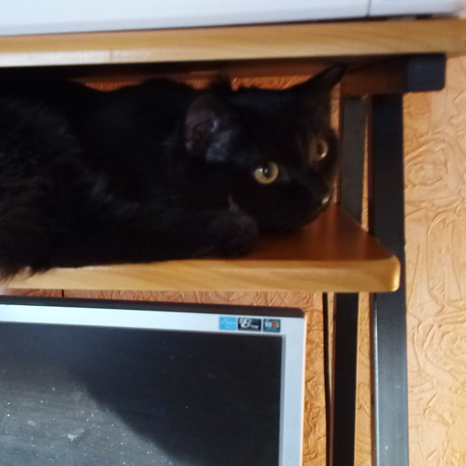

Grechkasoft Okna [Version 12.3.4567.89]
(c) Корпорация Гречкасофт (Grechkasoft Corporation). Все права защищены.
C:\Users\User>ArtemBurkaev.exe --about
[webcard-about] loading...
[webcard-about] done
---------- О себе ----------
Всем привет, меня зовут Артём Буркаев, я хорошо закончил школу и поступил на программную инженерию в ТПУ. Люблю сёрфить интернет, слушать музыку, играть в видеоигры, смотреть на природу, а также писать и модифицировать компьютерный код. Впервые компьютер я увидел в 3 года, через пару лет ими заинтересовался, ещё через пару пошел в IT-колледж ТГАСУ на основы работы с ПК. Основы программирования я начал познавать с 6 класса, а полноценные навыки кодера я приобрел и стал применять в 9-11 классах.
/------------------------\/------------------------\
\------------Я-----------/\----------Кот-----------/
C:\Users\User>ArtemBurkaev.exe --motiv
[webcard-motiv] ->Нажмите чтобы продолжить<-